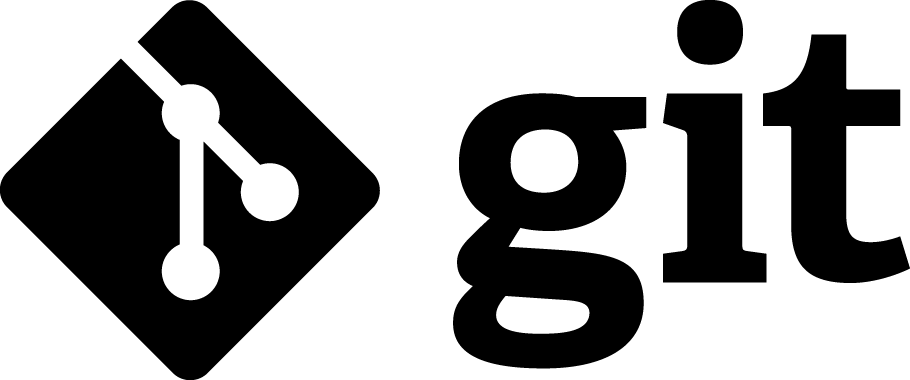
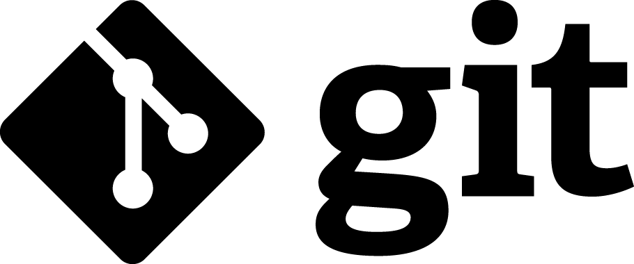

Decebal Popa
I am a programmer with experience in media (online, print), events management, travel and open source technologies, working randomly in these fields for the last 10 years. I am fluent in english, having basic knowledge of french and italian, my native language being romanian.
deckool@gmail.com deckool@hush.com
For the last 4 years and still counting i am a freelancer in web architecture and development, participating in various projects.
1998 - present
Member of alpine club Carpatic, participating in organizing mountain adventures and trails.
2005 - 2007
Colaborate with few travel agencies on management of business growth.
2008-2009
Teambuilding manager with Topteambuilding
contract negotiator and direct working with international organizations. ,outdoor activities providers (kayak, rafting, zip-line, guides) along with hotels and transportation. managing big databases of touristic service providers mainly romanians, italians and bulgarians.
2009
Parfait Roumanie - small web agency took birth, first product being a national travel magazine.
Project manager on Faraway magazine, Responsibilities: informations gathering, data mining, logistics, translating, the main domains being fashion, cosmetics and leisure industries.
2009-present
UI/UX design, web server side programming
It all began few years earlier with my first Linux installation, digging shell scripts, managing small web networks starting with Apache, PHP and MySql those days, gaining basic knowledge on these technologies, moving slowly to UI/UX design where i stayed from since.
now i am fully focusing on programming and UI/UX design, integrating both in various applications, Haskell1 being the main language, Html2, Css3, JS4, along with databases like MongoDB, Redis and ElasticSearch not being foreign.
more than 15000 hours of active coding in different environments starting with basic Wordpress5, Html, Css for theme development moving to the core with PHP6 continuing with some development with and for Indexhibit, Cargocollective community and Stacey. collecting XML7 and JSON8 data, moving towards data mining with earthquakes, weather and volcanoes jumping to different APIs like Github, DarkSky integrating coding in visual arts with Processing and Pure Data helped by Arduino microcontroller. touching Haskell and it's community, staying with it and learning programming. introduction to MongoDB, Redis and ElasticSearch. started to share code and make use of Git and Mercurial. Also, there is no lack on knowing other version control systems like Darcs.
2012
worked in economic - fundraising department in CREDIDAM, the Romanian Center for Performing Artists
Edmond Nicolau Technical College - Bucharest, graduated with Electronist Technician degree.
Dimitrie Cantemir University - Bucharest, Touristic and Commercial Management.

 


Processing, Pure Data, Haskell, Github, Git, Arduino.
Haskell: Web applications programming with integrated HTML, CSS and Javascript apps.↩
Html: Web architecture from scratch.↩
Css: Website design, responsive and simple, focusing on cross browser and cross devices aspect.↩
Javascript: Implementing plugins, maps, web frameworks. Keeping it simple!↩
Wordpress: Theme development, plugin interaction ↩
PHP: Beginner+ level mostly around frameworks like Wordpress, Indexhibit, Stacey and Cargo.↩
XML: Good understanding of this cross servers technology, building parsers and interpreters, making usage of collected data.↩
JSON: Knowledge on this native Javascript data format, building parsers and interpreters.↩